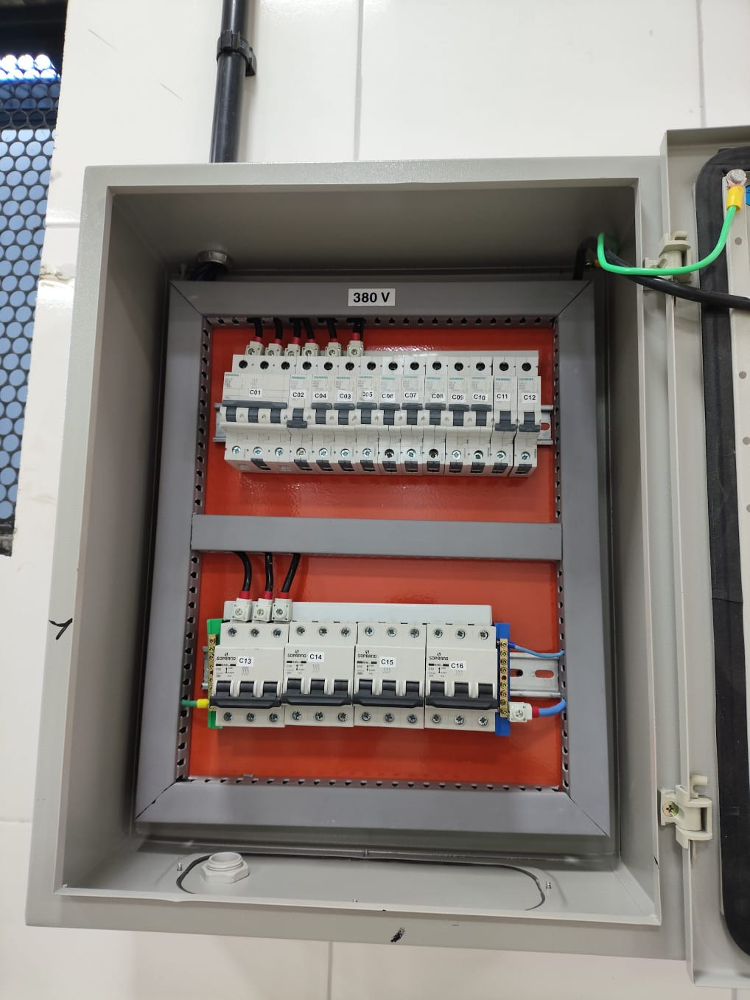

Quando trocar ou reformar o quadro

- Quadro antigo, com fusível ou disjuntor de rosca
- Disjuntores esquentando, escurecidos ou com cheiro de queimado
- Falta de espaço para novos circuitos (ar-condicionado, chuveiro, carregador de carro)
- Quadro sem DR e sem DPS
- Fios emendados e circuitos sem identificação
O que está incluído na reforma
- Dimensionamento dos disjuntores de acordo com a fiação de cada circuito
- Instalação de DR (proteção contra choque) e DPS (proteção contra surtos)
- Barramento de neutro e terra, com aterramento
- Organização e identificação dos circuitos
- Teste final de todos os circuitos
O serviço segue a NBR 5410 e a NR-10. Materiais podem ser comprados pelo cliente ou incluídos no orçamento, conforme combinado.
Perguntas frequentes
Preciso desligar a energia da casa toda?
Sim, durante a troca do quadro a energia fica desligada. O tempo depende do tamanho do quadro e é combinado antes.
O que é DR e DPS?
O DR desliga o circuito quando detecta fuga de corrente, protegendo contra choque. O DPS protege os aparelhos contra surtos, como os causados por raios.
Vocês fazem quadro para comércio e empresa?
Sim. Montamos quadros residenciais, comerciais e industriais, inclusive trifásicos.
Outros serviços em Luziânia
- Eletricista residencial em Luziânia
- Disjuntor desarmando ou caindo
- Instalação de chuveiro, tomadas e interruptores
- Instalação de wallbox (carregador de carro elétrico)
- Iluminação em LED, spots e fita de LED
- Eletricista industrial e comercial
- Eletricista para fazendas e chácaras
- Quanto custa um eletricista em Luziânia
- Bairros atendidos em Luziânia
- Eletricista no Jardim Ingá
Veja tudo o que fazemos na página principal.
Seu quadro está velho, quente ou desorganizado?
Mande uma mensagem com fotos do problema e receba retorno do próprio eletricista.